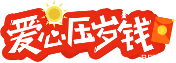
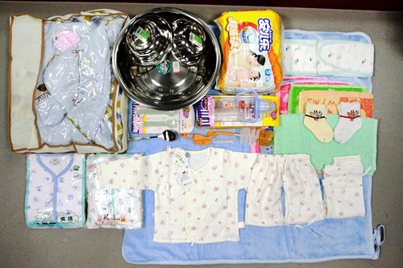

简介在大凉山发送红丝带母婴平安包，培训妇保员，推动住院分娩，祝母婴平安。
项目详情
大凉山，一个美丽而神秘的地方，然而除了绝美的风景，贫困、交通不畅、观念陈旧、医疗落后等问题也都真实存在。在大凉山贫困、偏远地区，很多妇女选择在家生产，有些困难产、产后出血等无法得到及时救治而死亡。孕产妇、新生儿死亡率不仅高于全国工水平，就是和西部地区相比，也高出一大截。这些本可以避免的悲剧每天都在发生！

为了动员当地育龄孕产妇住院检测、分娩，改善凉山州基层医疗卫生服务水平，提高基层卫生人员服务能力，减少艾滋病、肝炎、性病等传染病母婴传播的机率，我们发起了“红丝带母婴平安项目”，帮助凉山地区特殊困难孕产妇和新生儿。2014年12月1日，中华红丝带基金在北京启动“好孕益起来”全民公益体验暨红丝带母婴平安项目，14家企业和21家商会组织与我们一起，共同发起旨在推动大凉山住院分娩和艾滋病母婴阻断的公益项目，通过宣传倡导号召全民参与。
不幸：还未哺育就已永别
去凉山走访艾滋病红丝带母婴项目受助对象时，我们遇到了这样一个家庭：
这一家，丈夫因感染艾滋病去世，妻子体弱多病，不能像其他人一样打工、种田、养猪，仅能靠别人资助生活。更加不幸的是，她共分娩了14个孩子。
14个孩子，140月的怀胎期……
14个人，能组成两个篮球队或者一个足球队了。
无法体会母亲的艰难与心痛。
可是，因土法接生、传染疾病等原因，最终仅存活了3个孩子。作为一个母亲，她的生生地心被割裂了11次……
她哽咽地说：如果你们早点来，那些孩子可能不会这么早就离开。
我们无言以对，只愿接下来能做得更好！
我们和总理想到了一起！
世界艾滋病日前夕，李克强总理来到北京佑安医院看望艾滋病患者，考察艾滋病防治工作。考察期间总理看望了一个通过艾滋病母婴阻断医疗技术出生的健康孩子，他说，母婴阻断治疗给了艾滋病患者正常生活的希望，不仅是技术突破，也是爱的传播。过去多年来，克强总理几乎年年都会参加世界艾滋病日活动。然而今年对于我们而言意义非凡：我们在大凉山实施的“红丝带母婴平安项目”和总理想到一起了！
为了爱的传播，我们邀您一起支持大凉山特殊困难孕产妇！
善款接收机构

红丝带母婴平安项目主要在凉山彝族受艾滋病影响贫困地区实施，以提高当地住院分娩率，降低新生儿和孕产妇死亡率为目标，通过母婴平安爱心包裹的捐赠，孕期检查和住院分娩的动员，开展村医、村妇保员培训，在重点地区开展定向调查与研究，促使当地孕产妇住院分娩，降低性病、肝炎、结核病、艾滋病等经传染性疾病经母婴传播的风险，给特殊贫困地区的母亲和孩子送去关爱。
善款接收：中华红丝带基金
温馨提示：中华红丝带基金是由全国工商联和广大爱心民营企业共同发起的、旨在配合政府开展艾滋病防治的公益机构。自2005年成立至今，已经在河南、云南、四川、新疆、安徽等地实施了一系列公益项目，救助与安置了上万名受艾滋病影响的婴儿及儿童少年，面向50多万外来务工人员开展防艾宣传并送上“红丝带健康包”，为受艾滋病影响贫困地区援建了上百所医院、学校、卫生室，开展了一系列丰富多彩的防艾宣传。基金的公益事业得到了广大民营企业的积极响应和支持，受到了有关部门和受助群体的积极好评。我们期待更多的爱心企业和个人加入我们的行列，为艾滋病防治做出更大的贡献！